Voxterra
An endless world of blocks, grown from a seed. Fly over it, dig into it, build anything.
An original game by Cycle Start Studios. Not affiliated with, endorsed by, or connected to any other game or company.
Your worlds
New world
The same seed and world type always grow exactly the same world, on any device. Use a number or any word.
Growing the world…
This is taking longer than it should. On phones and tablets, closing other tabs and apps often helps.
World
Seed ·
Map
Drag to look around · click a spot to go there
Settings
How to play
Every world grows from a seed: hills, forests, jungles, deserts, snowfields, marshes, mountains, rivers, lakes, seas and the caves beneath them, with hamlets, cabins, old watchtowers, standing stones and piers to come across. You are in creative mode, so every block is yours, in any amount, and you can fly.
| Mouse and keyboard | Touch | |
|---|---|---|
| Move | WASD or arrows · hold Shift (or double-tap W) to run · C to crouch | Stick on the left · push it all the way to sprint |
| Look | Move the mouse (click the world first) | The look stick on the right: hold it near the edge to keep turning · or drag anywhere on the screen |
| Jump · fly | Space · double-tap Space or F to fly, Space up, C down | Jump (round the look stick) · double-tap Jump or Fly (top left), Jump and Down to rise and sink |
| Build | Left click (hold to keep going) | Build button (hold to keep going): it only ever builds · or tap the screen, with the buttons off in Settings |
| Use | Left click uses what you aim at instead of building on it (see below) | Use button: it says what it will do (Pet, Open, Pick, Cast...); on a plain block it says Turn for one that turns (stairs, logs, torches) and Copy for any other |
| Break | Right click (hold to keep going) · you can swap the buttons in Settings | Break button (hold to keep going) · or press and hold the screen |
| Pick a block | E for all blocks · 1–9 or wheel for the hotbar · middle click or Q copies the block you look at | Blocks · tap a hotbar slot · press and hold Use to copy the block you look at |
| Turn a block | R turns the block you aim at · Shift+R flips stairs and slabs over, or a door's hinge | Use on a block that turns |
| Map · photos | M map, places and friends (click to go anywhere) · P photo mode: Enter saves a picture, [ ] move the sun | Pause menu |
| Doors · gates | Left click opens and shuts doors, gates and trapdoors · hold C and left click to place a block against one instead | Use opens and shuts · Build places a block against one |
| Decoration | Left click a sign to write on it, a chest to open it (click a chest slot to swap it with your highlighted hotbar slot), a bed to sleep (or dye it with a cloth or carpet in hand), a pot to plant the flower you hold, a chair to sit, a picture to change it, a button or lever to work the doors beside it | Use |
| Animals | Left click to pet · pet twice or N to give it a name (it is yours now) · pet a friend twice: follow me, or live here · right click to startle | Use pets (it shows a heart) · twice to name · Break startles |
| Bugs · fish | With the bug net or fishing rod in hand (in Tools), left click catches, casts and reels in · B for your bag and the collection book | Use with the net or rod · Bag |
| Undo · redo | Ctrl+Z · Ctrl+Y | |
| Other | Crouching on the ground keeps you from walking off edges · F3 details · F1 hides the interface · Esc pause | ❚❚ pauses |
Building tips
Stairs climb the way you are looking. Aim at the upper half of a block's side, or at its underside, for upside-down stairs and top slabs; two matching slabs make a full block. Logs lie along the face you place them on, and carved pumpkins, kilns and workbenches turn their front to you. Fences, walls and glass panes join up with their neighbours. Torches stand on the ground or hang on walls; ladders climb when you walk into them or hold jump, and hold you still while you crouch. Plants, torches, ladders and doors resting on a block go when it does. Dig as deep as you like: Floorstone is the bottom of the world, and nothing breaks it.
Decoration
When the crosshair is on something you can use, the label under it says what clicking will do. Chests hold eighteen blocks: click a chest slot to swap it with the highlighted slot of your hotbar, or drag between slots. A chest you find in a house already has a few things in it. Signs stand on the ground or hang on walls; placing one asks what to write. Beds are two blocks long with the pillow away from you; sleeping in one at night brings the morning, and it becomes where you start. Lanterns hang when you place them under a block. Buttons and levers open the doors, trapdoors and garden gates next to them, or next to the block they are fixed to. Pictures, signs, buttons and lanterns come down with the block they are on.
Water and lava
Water runs: a source spreads up to seven blocks across and pours over edges, and when you take the source away the water drains. Two sources side by side make a third, so a pool fills itself. Lava runs three blocks. Where lava meets water it sets hard, into obsidian at the source and basalt where it was running. Running water carries you along.
Animals
There are 87 kinds to find: deer, rabbits, foxes, squirrels, chipmunks, red pandas, flying squirrels (they climb the trees and glide down), white geese and Canada geese, frogs, turtles, goats, hens, sheep, pigs and cows; birds from sparrows to owls (by night) and parrots (in the jungle); butterflies, moths, bees, dragonflies, ladybugs, beetles, snails and fireflies; and sixteen kinds of fish. Each lives somewhere of its own, and some only come out at night or in the rain. Nothing attacks. Pet them for a heart or two; come running and the shy ones bolt.
Taming. Pet an animal again while it is still happy to give it a name: now it is your friend, stays near where you named it, wears a name tag, shows on the map with its picture and is kept with your world. Pet a friend twice more to ask it to follow you, walk it home, and ask it to live here. Fences and shut gates keep animals in a pen. Birds come down to perch now and then: they fly off if you run at them, so crouch and creep up to tame one, and it will flutter about your shoulder. For younger players, Passive mode in Settings stops every animal running away from you: walk right up to them.
Catching. The bug net and the fishing rod are in Tools. Swing the net at a bug to catch it. Cast the rod onto a pond, a river or the sea, wait for the float to bob under, then reel in quickly: what bites depends on the water and the time of day. What you catch goes in your bag (B, or the Bag button): pick one to carry it, then put a bug in a glass jar (Decor), and let a fish go in water. A tank of glass blocks filled with water makes a fine aquarium: a bucket scoops water up and pours it out.
Finding friends. Open the map (M) and pick Friends to see all your animals, how far away they are and which way. Show finds one on the map, Go takes you there, and Find puts an arrow at the top of the screen: walk the way it points until you reach your friend. Your bag's Friends page has Map and Find buttons too. The friends following you are at the top of both lists: Stop following leaves one where it is, and Stop them all leaves the whole crowd there.
The magic mirror. If there is a magic mirror at home with the Voxterrarium on it, your friends can move into the little glass terrarium on it. Put the address the mirror shows into Settings (Test checks it), or scan the code on the mirror with the phone or tablet you play on and say Use it. (A game added to the home screen of an iPhone or iPad keeps its own settings: type the address into Settings there.) Then tap Send twice by a friend in either Friends list, or Send to the mirror twice on a friend's card, or pick a bug or fish in your bag and send it. On the mirror you can feed them, pet them and play with them. A friend you send leaves your world, but only once the mirror says it is there. Some browsers open the mirror's own page in a new tab: tap the big button there to send your friend, and come back to the game when it says your friend is in the terrarium. If the mirror has several jars (one for each of you, say), scan the code for your own jar, or tap Test in Settings and pick your jar there: your friends go into it.
The collection book (in your bag) has a page for every kind, with where to look for it: a ✓ when you have caught or tamed one, and a ★ when you have brought it home. You can switch animals off in Settings.
The garden
Use a garden hoe (in Tools) on grass or dirt to make garden soil, then plant carrots, wheat, tomatoes, strawberries or sunflowers in it (they are in Plants). They grow in four stages while you are nearby, faster with water close by. Pick a ripe crop and its food goes in your bag, and the plant grows again. Hold food out to an animal that loves it: a wild one will follow you for a while, so you can lead it home, and two tame friends of the same kind fed together will have a baby. Plant a sapling and in a couple of minutes it grows into a tree.
Baby animals
- Tame two animals of the same kind: pet each one twice and give it a name.
- Find out what they love: pet a friend twice and its card shows the food, or look in the collection book. Deer love wheat and carrots, rabbits love carrots and strawberries, and so on.
- Grow that food: a garden hoe (in Tools) makes garden soil, the crops are in Plants, and a ripe one goes in your bag when you pick it.
- Bring the two friends close together and feed them both, one straight after the other: from their cards (pet twice, then Feed), or take the food from your bag and use it on each one.
- A baby arrives with a shower of hearts. Name it like any other friend; it grows up in a few minutes.
- Try two of a kind in different colours, like a Mallard and a White Duck: their baby can come out in a new mix of both, a head from one and a body from the other, or colours halfway between. Mixed babies pass their colours on to their own babies. Every animal comes in at least two colours, so any of them can make mixes.
- Penguins love fish and frogs love bugs: catch one, then feed it from the card, or take it out of your bag and give it to them.
Fun blocks
In Fun: bounce pads throw you up in the air (hold jump to go higher, crouch to stand still on one); music tiles play a note when you walk over them (use one to change its note, and watch the animals dance); firework boxes go off when you use them, or when you press a button or pull a lever next to them. And ice is slippery: take a run at it.
Weather
Rain comes and goes, turning to snow in cold country and high up, and now and then a thunderstorm rolls through. It never rains under a roof, or on the deserts. Pick the weather, or stop it changing, from the pause menu.
Controllers
Plug in or pair a gamepad and play: left stick to move, right stick to look, A to jump (twice to fly), B to go down, RT to break, LT to place and use things, LB and RB to change blocks, Y for all blocks, X to copy the block you look at, R3 to turn a block, d-pad down for your bag, View for the map and Menu to pause. In menus the d-pad moves between buttons, A presses and B goes back.
Saving and sharing
Your world saves itself every half minute and whenever you pause. Each world keeps only the blocks you changed, so saves stay small. Export gives you a file (or text) to keep or move to another device; Import a world on the worlds screen brings it back. Deleted a world by mistake? It waits in Recently deleted, under your worlds, for 30 days: tap Restore. To share a world as it first grew, just share its seed and world type. Add Voxterra to your home screen to play it offline.
Voxterra is an independent work by Cycle Start Studios. It is not affiliated with, endorsed by, sponsored by, or connected to any other game, developer, or publisher, and uses no trademarks of any other company. All artwork and sound are generated at runtime from original code.
Blocks
Pick a block to put it in the highlighted hotbar slot, or drag it onto any slot.
Bag
Chest
Click a slot to swap it with the highlighted hotbar slot, or drag between any two.